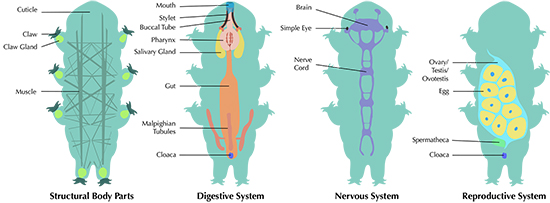

"Here we go more in depth about waterbears"
Waterbears, more commonly known as Tardigrades, are these little, microscopic creatures that live everywhere! They can survive just about any condition they are put in including the heat of a volcano, the depths of the ocean and even space! These creatures are rounder, with 8 legs and a little hole as a mouth. Waterbears are translucent, meaning you can see their organs. Scientists would observe them under microscopes, watching what they eat.
They have a skeletal structure without actually having any bones! It’s like filling water into a balloon. Instead of blood, they have Hemolymph, which is very similar as it carries nutrients around the body for this little creature.
